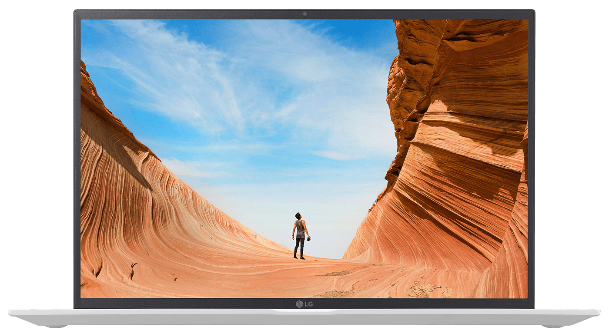
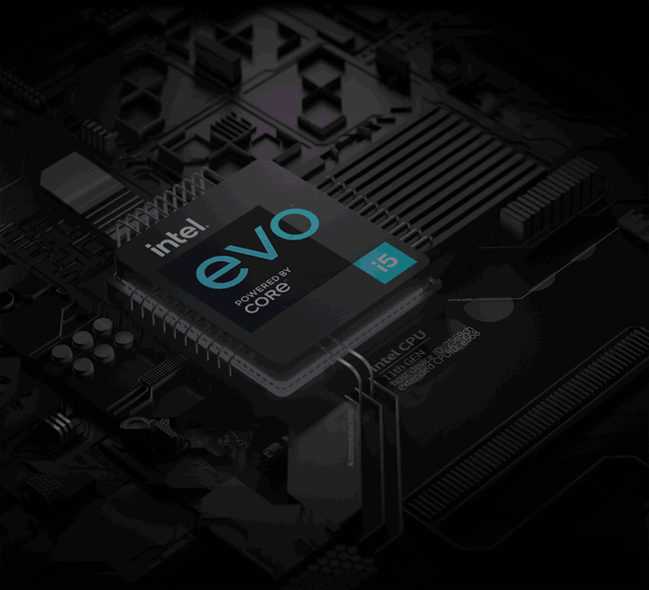
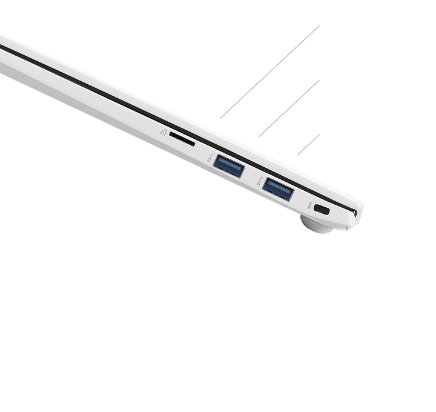
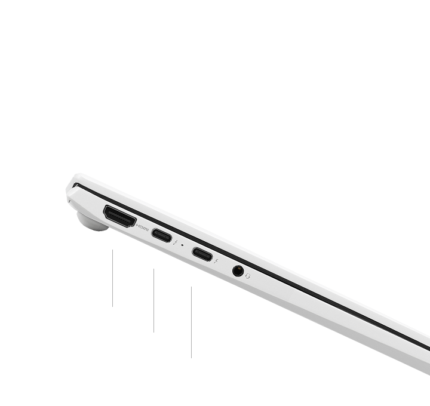
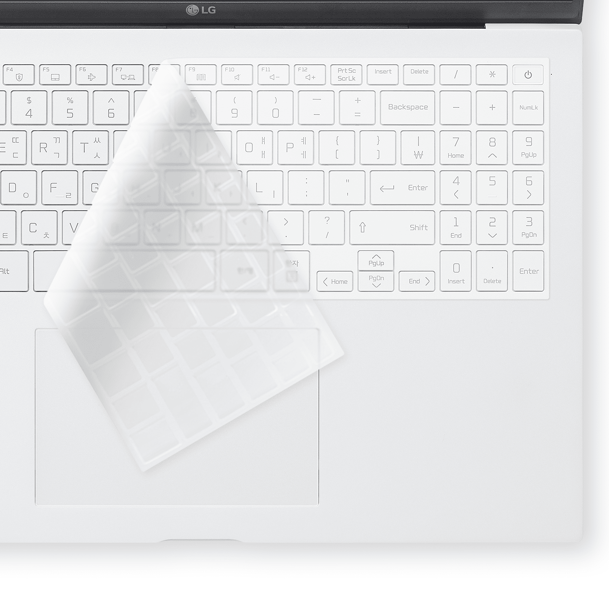

미국 영상 업계가 만든 디지털 영상 표준 색영역으로 숫자가 높을 수록 더 많은 색상을 정확하게 표현합니다. 색영역은 우리가 보는 색상의 범위를 말하며, 이 범위를 색상, 명도, 채도 기준으로 3차원의 입체적인 그래프로 표현한 것입니다. 이 영역이 넓고, 숫자가 높을 수록 더 많은 색상을 정확하게 표현합니다.
최경량 1,190g
기네스가 인정한
가벼움

대화면이지만 약 1,190 g의 무게로
어디서나 부담없이 가볍게
어디서나 부담없이 가볍게
* 제품 기준, 어댑터 및 포장물 제외 무게
* 세계 최경량 16 노트북 인증 획득
(2020년 12월, 기네스 월드 레코드®)
15보다 작은 16
사이즈는 줄이고
화면은 크게


* 그램 16 : 화면 대각선 40.6cm
* 울트라 PC(15U50N) : 화면 대각선 39.6cm
열어도 닫아도
그램 다운 디자인
-
스노우 화이트
눈부신 순백의 아름다움
하얀 눈을 그대로 담아낸 스노우 화이트
11% 더 커진
16 대화면

4면 슬림 베젤로 컴팩트한 사이즈에
대화면을 담아 더 큰 몰입감을 느낄 수 있습니다
대화면을 담아 더 큰 몰입감을 느낄 수 있습니다
* 16형 그램 16 기준 : 화면 대각선 40.6cm
* 15형 울트라 PC(15U50N 기준) : 화면 대각선 39.6cm
당신의 작업을
더 효율적으로
16:9 보다 세로 비율이 더 넓어진 16:10 으로
사진, 영상 또는문서 작업 시 더 효율적입니다
2배 더 선명하게
생생함으로 더 즐겁게
Full HD(1920x1080) 보다 2배 정밀한
초고해상도 WQXGA(2560x1600)
빈 틈 없이 밀착된 화면
감동으로 채우다
퍼펙트 히든 힌지로 4면 슬림 베젤을 완성하여
화면의 집중도와 몰입감을 극대화 하였습니다
키보드
누르는 순간
기분 좋은 타이핑

* 1.65mm : 깊어진 키 스트로크
터치패드
확 넓어진
터치패드로 자유롭게

80 Wh 대용량 배터리
최고의 순간까지
함께하는 배터리
언제 어디서든
강인한 그램
미 국방부 내구성 테스트를 통과한 극강의 그램 16

우리가 가는 길이
새로움의 표준
인텔® Evo™ 플랫폼 인증

CPU i5 이상, Windows 10 OS 포함 제품에 한함

즉시 깨우기: 1초 이내에 시스템 대기 모드에서 활성화
긴 배터리 시간: 배터리 라이프(PABL), 동영상 재생 시 16시간/웹브라우징 시 9시간 사용
빠른 충전: 30분 충전으로 4시간 사용
제조사에서 제공한 측정값이며 사용 환경에 따라 달라질 수 있습니다
-
11세대 인텔® 코어™
프로세서 -
차세대 그래픽
인텔® Iris® Xe 그래픽 -
강력한 LPDDR4x 메모리

-
최대 5.3배 빠른 NVMe™ SSD

제조사에서 제공한 측정값이며 사용 환경에 따라 달라질 수 있습니다
이해를 돕기 위해 연출된 이미지입니다
다양한 입출력 단자
강력한 썬더볼트 4
충전, 데이터 전송, 다양한 주변장치를 더 빠르게
연결하는 썬더볼트 4
슬림하지만 갖출 건 다 갖춘 다양한 입출력 단자


USB 3.1 = USB 3.2 Gen 2x1 전송속도 10 Gbps
USB 4.0 = USB 4 Gen 3x2 전송속도 40 Gbps
제조사에서 제공한 측정값이며 사용 환경에 따라 달라질 수 있습니다
깊이있게 웅장하게
DTS:X Ultra 적용으로 입체적인 사운드
*스마트 앰프 적용 시 최대 5Wx2
99.99% 항균 효과
안심 키스킨

대장균, 황색포도상구균, 녹농균 항균활성치 4 이상
24시간 후 균수(CFU/mL) 항균활성치를 한국분석시험연구원을 통해 측정하여 얻은 결과값입니다.